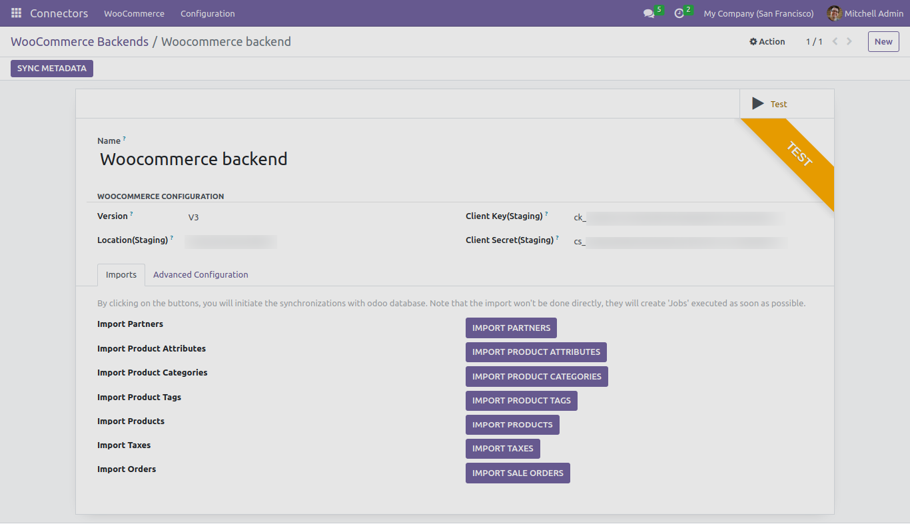
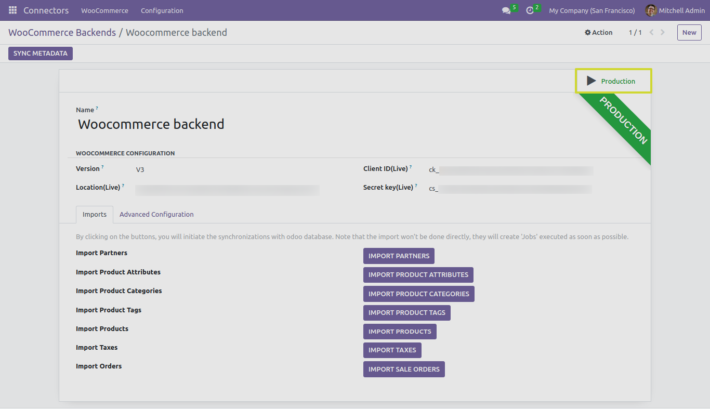

Backend Overview
In this section, we provide an basic overview of the backend architecture of the Odoo Woocommerce Connector, along with informative images to help you understand the structure and components.
The Backend Architecture
The backend architecture of the Odoo Woocommerce Connector consists of several key components:
-
Odoo Server: The Odoo server is the core of the integration. It manages Odoo’s data and business logic.
-
WooCommerce Platform: WooCommerce is the e-commerce platform where your online store operates.
-
Connector Engine: The connector engine acts as the bridge between Odoo and WooCommerce, facilitating data synchronization and communication.
-
Data Exchange: Data exchange mechanisms allow real-time data transfer between Odoo and WooCommerce, ensuring consistency.
-
Automated Processes: The connector includes automated processes to reduce manual efforts and streamline operations.
General Backend View
The general backend view provides an overview of the backend’s user interface. Users can access the backend to configure and manage the connector’s settings and functionality.
In the general backend view, you can perform the following actions:
-
Syncing Meta data of country, state, tax policy, shipping methods.
Importing Partners.
-
Importing Product Attributes with Values, Product categories, Product tags and Products.
Importing Taxes.
Importing Orders.
To effectively configure and manage the Odoo Woocommerce Connector, you will need to provide the following WooCommerce credentials:
-
Consumer Key (CK): The Consumer Key is required for secure communication with WooCommerce.
-
Consumer Secret (CS): The Consumer Secret is another crucial component for secure communication.
-
Location-Base URL: Provide the URL to your WooCommerce store, ensuring that the connector can communicate with your e-commerce platform.
Understanding the backend view and configuring these credentials is crucial for managing the connector and ensuring smooth communication with WooCommerce.
Advance Configuration Backend View
The advanced configuration backend view allows you to fine-tune the settings and parameters of the Odoo Woocommerce Connector to meet your specific business needs. In this view, you can perform advanced actions such as:
Setting up importing records limit.
Product Configuration.
Customer configuration.
Order configuration.
Production Mode
By switching from test mode to production mode we can mange our staging level Woocommerce data with odoo flawlessly:
Next Steps
In the following sections, we will delve go through into each component of the backend architecture, including detailed instructions on setting up and configuring the connector for your specific business needs.